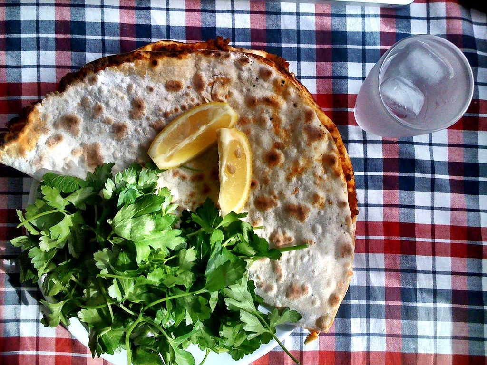

Menü panosu
Pide, döner ve çorba: üç tezgâhın tipik lezzetleri tek panoda. Fiyat yazmadık; güncel menüyü ve fiyatları sormanız yeterli. Beğendiğiniz kalemi “+” ile fişe ekleyin, siparişi paket sayfasında tamamlayın.
Pide · Döner · Çorba
Bu pano, pide ve döner salonlarında neredeyse her zaman bulunan kalemlerden hazırlanmış örnek bir menüdür. Kazanda ve tezgâhta olanlar güne göre değişebilir; emin olmadığınız her şeyi sorun, bilgi verelim.
Ne canınız çekiyor?
Tüm kalemler gösteriliyor.
Pide
Acı, yumurta, tereyağı ve dilimli kesim isteklerinizi siparişte belirtin.
Döner

Et ve tavuk döner seçeneklerini güne göre sorun. “Yağlı”, “az soğanlı”, “acısız” gibi istekleri siparişe yazın.
Çorba
Kazandaki çorbalar güne göre değişir. Et ya da tavuk suyu kullanılıp kullanılmadığını merak ediyorsanız sorun.
Yanında
Tezgâh sözlüğü
Pide ve döner salonlarında siparişi kısaltan sözler. Siparişinizi yazarken işinize yarar.
- Kayık
- Kenarları içe kıvrılmış, uçları burulmuş açık pide biçimi.
- Kapalı pide
- Hamurun harcın üstünü tamamen örttüğü pide; harç içeride pişer.
- Yumurtalı
- Kaşarlı ya da kıymalı pidenin üstüne, fırına girmeden yumurta kırılır.
- Tereyağlı
- Fırından çıkan pidenin kenarlarına eritilmiş tereyağı sürülür.
- Dilimli
- Pide enine dilimlenir; paylaşmak ve elde yemek kolaylaşır. Ofis siparişinde işe yarar.
- Porsiyon
- Tabakta servis edilen döner; yanında pide ekmeği ya da pilav olabilir.
- Pilav üstü
- Dönerin pilav yatağında servis edilmesi.
- Dürüm
- Lavaş ya da yufkaya sarılmış döner; elde yenir.
- Yarım ekmek
- Ekmek arası dönerde ekmeğin boyunu anlatır; çeyrek ekmek daha küçüktür.
- Pideli döner
- Doğranmış pide üstünde döner; genellikle domates sosu, yoğurt ve tereyağıyla.
- Terbiye
- Çorbaya yumurta, limon ve unla verilen kıvam; tavuk çorbasında sık görülür.
- Açık ayran
- Kapalı kutu yerine bardağa ya da maşrapaya dökülerek verilen köpüklü ayran.
İçerik ve hassasiyet notu
Pide ve lahmacun hamuru buğday unu, yani gluten içerir. Kaşarlı ve peynirli pideler ile yayla çorbası süt ürünü; yumurtalı pideler ve terbiyeli çorbalar yumurta içerir.
Bir gıdaya hassasiyetiniz varsa siparişte açıkça yazın ve içerikleri sorun. Etsiz beslenenler için kaşarlı ve peynirli pide ile mercimek, ezogelin ve yayla çorbası iyi başlangıçlardır; çorbalarda et suyu kullanımını sormayı unutmayın.
